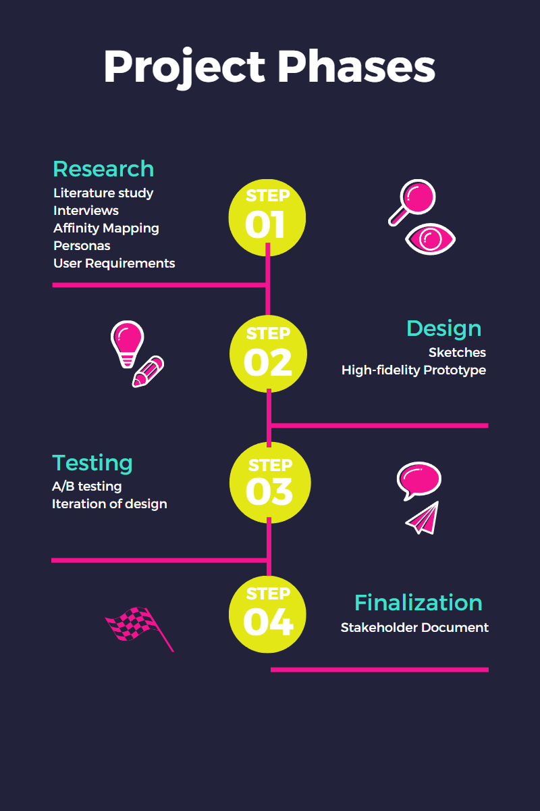

-
Introduction
During the Advanced Media Design, students have to choose a project from a company to work on in a group of six members. The group project I chose was the Stress wearable project owned by Lectoraat IxD.
-
The Context
The Stakeholder
Lectoraat explores new possibilities for utilizing games in areas such as culture, entertainment, education, and healthcare. The Lectoraat has transitioned from designing serious games as standalone interventions to integrating playful behavior into complex services, tailored to individual needs within fields like education and healthcare.
The stakeholder of the project is Evelien van de Garde who is part of the Lectoraat IxD and works on the stress wearables.
Problem Statement
Lectoraat IxD’s main interest is how can stress affect a person and how it can be measured and shown in a clear way to users. One of the wearables that was tested by researchers of Lectoraat is the Moodmetric Ring that can connect to an app which shows the levels of stress during the day and night.
In the past, students and researchers worked on creating different apps to show the stress data collected by the Moodmetric ring. However, there's a big problem with these apps, like Moodlet. The data they show hasn't been validated through research. Also, these apps don't provide important information like what causes the stress and when it happens. This makes it difficult for users to get a deeper understanding of their moments of stress and what might be causing it.
The Assignment
Our team was tasked with designing a solution that communicates stress data in a meaningful and clear way to the target users, which are users with PPS (Persistent Physical Symptoms). Our focus should be data visualization and coming up with new graphs to present stress data..
-
Research Questions
Main Research Question
"How might we design a solution for individuals with physical complaints, that provides meaningful data collected from stress wearables in a non-judgemental way?”
Sub-questions
1. What are the needs of individuals with PPS?
2. How can we design an interface that displays stress data in a non-judgmental way?
3. How are we going to measure the user-friendliness in data visualizations?
-
Approach
The approach for this group project will be the Design Thinking method. This method focuses on understanding the users and their pain points, coming up with ideas on how to solve the problem and present the concept in a a way the users can test it. There are five phases: empathize, define, prototype and test.
Along the design thinking method, we will be using CMD (Communication and Multimedia Design) research methods. CMD methods provided us with a structured approach to collecting and analysing data. We used a variety of research techniques, such as interviews, literature studies, showroom, and lab methods, to gather valuable insights from our target users.
Planning
This project is divided into 4 phases.
A Project plan was created to organize the Stress Wearable Project.
-
The Four Phases

Reflection
This project for me was a learning experience. In the beginning when we had to choose a project to work on it made me confused since we did not have any description and goal of the project but just a name. I chose this project since the name “Wearables for stress (autism)” made me curious in wanting to create maybe a software that is compatible with a wearable. I also never worked on a project in the medical field which seemed daunting but I wanted to take on the challenge.
But in the end we worked on something different. At first the project was described by the stakeholder as a way to improve the visualizations for stress data. It was shame we could not work directly with wearables and work on the actual device, but since in my last internship I worked on data visualization I was excited to bring what I learned from there and to improve my knowledge.
The collaboration between my classmates went really good. I only knew two people from the group but still all of us became fast friends. We worked well together and each one of us had tasks along the group project. When working together on different deliverables all of us had the opportunity to give our insights and to share their own knowledge. Since all of us are internationals it was very interesting to listen and learn from each other’s own working methods and thinking. I believe that our team worked very hard during this semester.
What I also lacked in this semester’s group project was communicating more with the stakeholder and semester couch about the project. Next project I need to be more vocal and to show that I can communicate with the stakeholder.
Furthermore, since this semester was research based it taught me how much knowledge I lacked when it comes to documenting the findings of a research. It was for the first time I used APA format to cite sources. I am not very good at research but I believe I improved more after this semester. Still there is a lot of room for improvement.
This group project helped me learn more about data visualization which I did find interesting. What I also need to learn for next time is how to work on the C2 part of the C4 model.
Overall, the project taught me many things. It was interesting to work on it and to have the chance to meet my classmates.